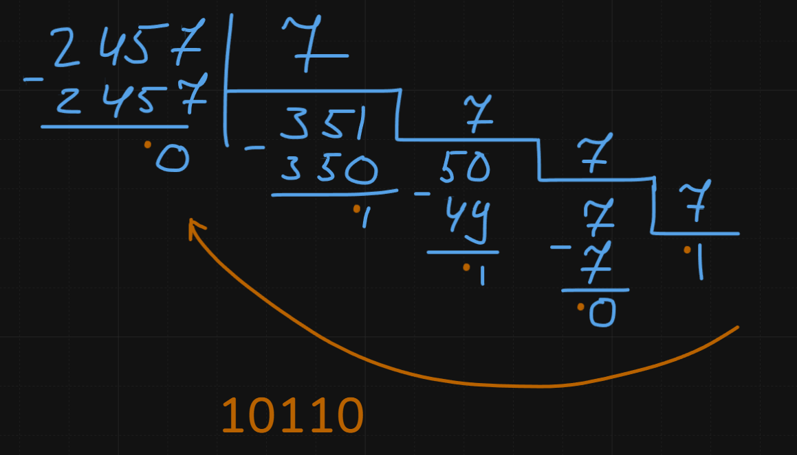
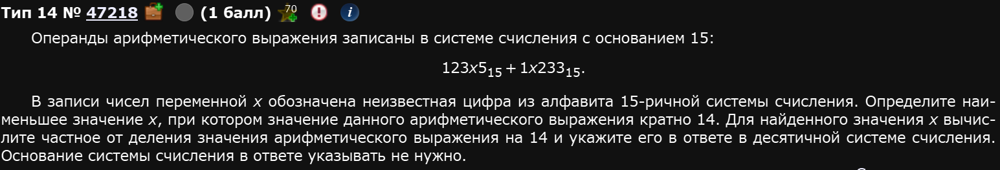
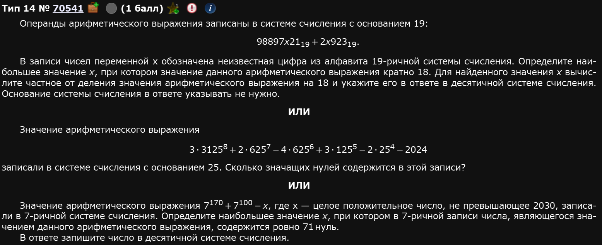
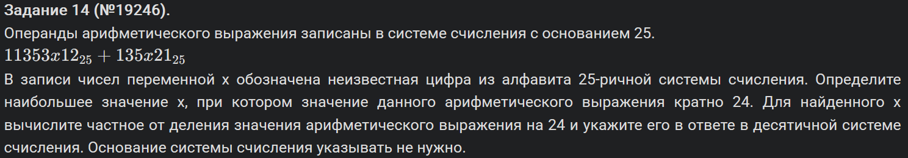
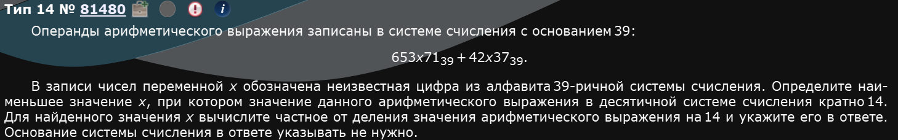
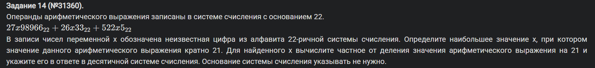
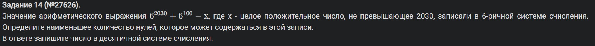
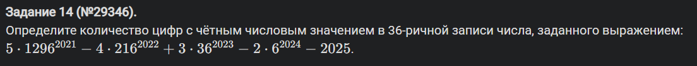
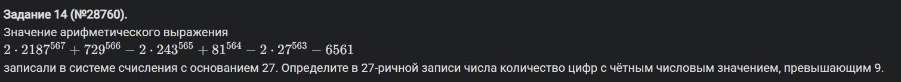

№14 Операнды
Перед разбором: минимальный Питон.
Это задание представляет из себя работу с числами и системами счисления. Начнем, как обычно, с простого.
При БОЛЬШОМ желании можно сделать и ручками, но, пожалуйста, не надо,,,
Разборы
Пример 1)
Сначала зададим всю эту красоту:
n = 2*729**2014 + 2*81**2018 + 2*27**2020 - 2*9**2022 - 2024К сожалению, нельзя просто посчитать методом count, ведь всю вот эту неприятную штуку надо перевести в 27-ричную систему счисления. Дело нехитрое, если помните как это делается. На всякий случай напомню:
Чтобы перевести число из 10-чной в произвольную систему счисления нужно последовательно делить его на основание новой системы счисления. Ручками это делается в столбик как-то вот так:

А затем остатки записываются в обратном порядке. Т.е. в этом примере число 2457 в 7-ричной системе счисления будет представляться как 10110.
Такой же принцип надо применить и в нашей программке.
Т.е. мы должны последовательно делить наше n до тех пор пока оно не станет равно 0 на 27. Параллельно с этим можно делать две вещи:
- Простым if вносить в некую переменную +1 каждый раз, когда прокает условие
- Создавать список по мере выполнения цикла, а после чекнуть сколько там элементов, которые >9
Первое выглядит проще для понимания, будем делать именно так.
Собираем прогу:
Ответ: 2019.
Пример 2)

Выглядит страшно, но не стоит пугаться. По реализации этот едва ли страшнее, чем предыдущий, он страшнее по идеи.
Итак, как же найти этот х? Простым перебором, разумеется. Т.е. мы будем прогонять все значения из возможных в системе счисления, в которой указаны числа, т.е. 15, подставлять их вместо х и смотреть делится ли получившееся на 14 без остатка. Ежели да, принтуем и ломаем цикл.
Собсна все, описали основную идею, осталось реализовать прогу:
Ответ: 8767.
Пример 3)

Решим все три по порядку.
Пример 3.1)
Покажу немного другой способ решения прототипа с х (первое из этих трех). Дело в том, что иногда цифры в различных системах счисления бывают довольно большими, например 19-ричная система. Это типа вот такие вот цифры:
Соответственно, чем больше система счисления, тем больше этих цифр и писать их бывает довольно запарно. Можно сократить себе путь импортом букв из библиотеки string:
from string import ascii_lowercase #Буквально импортирует все буквы латинского алфавита нижнего регистра с a до zТолько потом надо будет к этому всему набору прибавить еще и числа:
alp = '0123456789' + ascii_lowercaseПравда, в таком случае, питон будет ругаться на вас. Ему не понравится, что вы попытайтесь преобразовать неприятный для него символ через int. Это нормально. Программа все равно сработает как надо.
Далее производим стандартные для этого задания действия: задаем числа, делаем их сумму через int, чекаем на if и если да, то принтуем:
Первое выданное число программой будет являться ответом.
Ответ: 469034148.
Пример 3.2)
Покажу два способа решить такое задание.
Второй способ: без определения функции, простой счетчик.
Пример 3.3)
Прикольное, необычное задание. Сделаем тупо. Поставим обычный счетчик мол когда прокает деление с остатком равно нулю счетчик докидывает единичку в себя и если таких единичек 71 (т.е. в числе 71 нуль), то запринтуем его. Единственный нюанс - мы, таким образом, запринтуем минимальное, а не максимальное. Это не проблема, цикл можно прогнать в обратном порядке.
Ответ: 2029.
Пример 4)

ЕГКР 2024
Аналогично предыдущим:
Пояснение
Обратный порядок нужен потому, что хотим найти “наибольшее значение х”. С конца проще идти еще и потому, что дальше стоит
break.
Ответ: 266249847
Пример 5)

Тут у нас вот какая сложность: система счисления больше, чем число букв в английском алфавите (их там 26) + десятичные цифры (36 в сумме). Поэтому мы применим другой подход. Вообще не будем использовать ничего, что связано с алфавитом.
Вот эти строки:
t1 = 6*39**5 + 5*39**4 + 3*39**3 + x*39**2 + 7*39**1 + 1*39**0t2 = 4*39**4 + 2*39**3 + x*39**2 + 3*39**1 + 7*39**0
Это контекстные аналоги вот эти строк из предыдущих примеров:
x1 = '123' + str(x) + '5'x2 = '1' + str(x) + '233'
Только переводим мы числа в другую систему счисления “школьным” методом. Но мы все еще переводим число в другую систему счисления.
В каком-то смысле это более универсальный вариант кода, который мы разбирали до этого. Здесь нет привязки к алфавиту вообще, следовательно, нет на 1 серьезную точку отказа меньше.
Совет
Можно брать себе такой метод как второй для решения подобных задач.
Решение предыдущих примеров без алфавита
Пояснение
Обратный порядок нужен потому, что хотим найти “наибольшее значение х”. С конца проще идти еще и потому, что дальше стоит
break.
Пример 6)

Пример 7)

Пример 8)

Пример 9)
